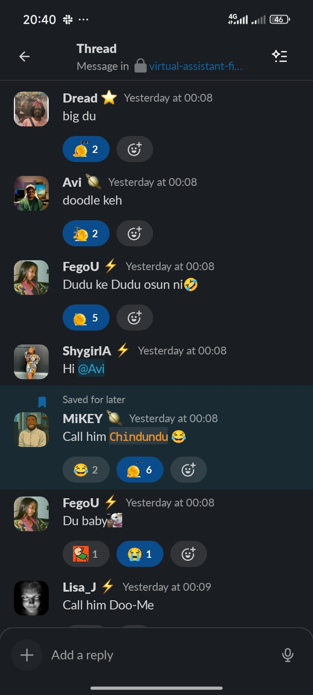
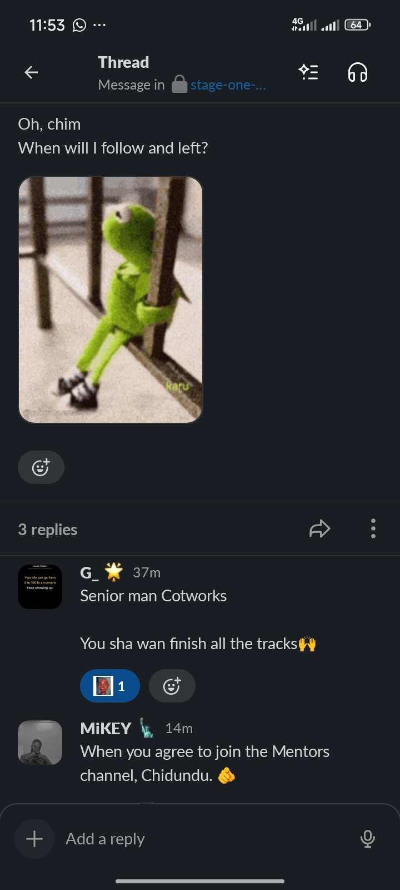
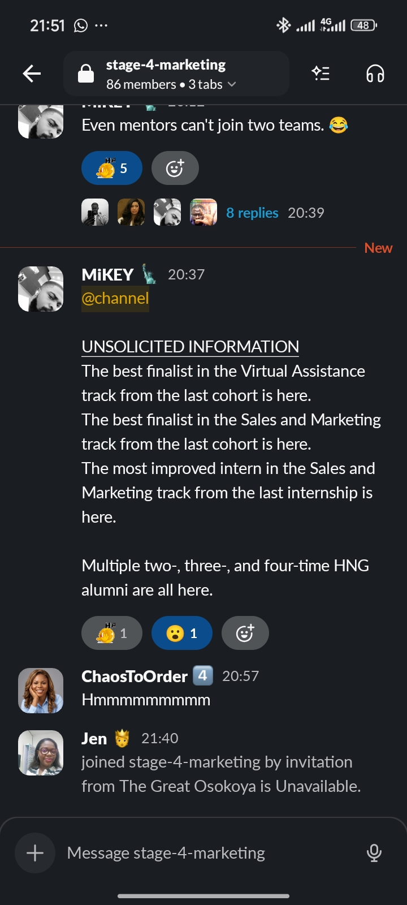
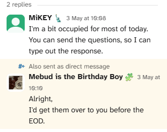
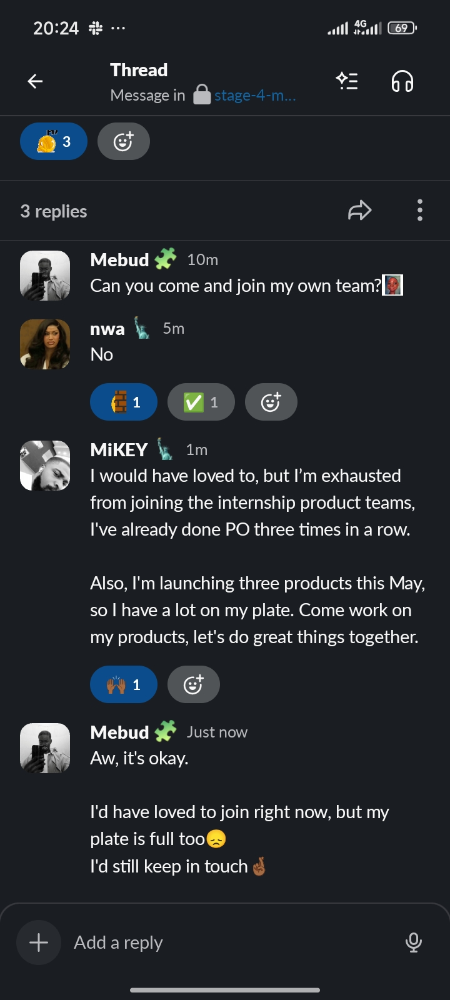
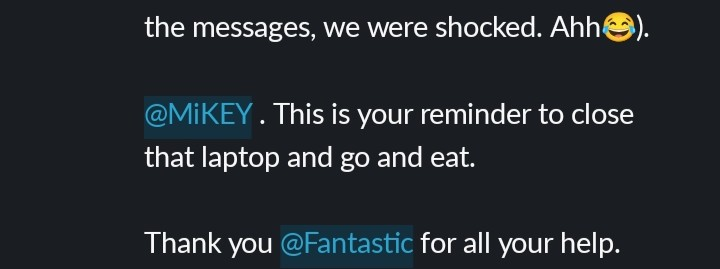
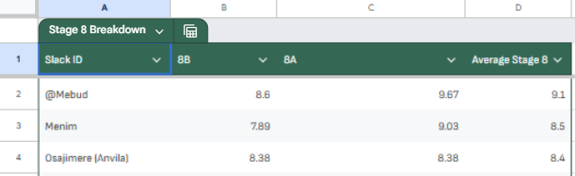
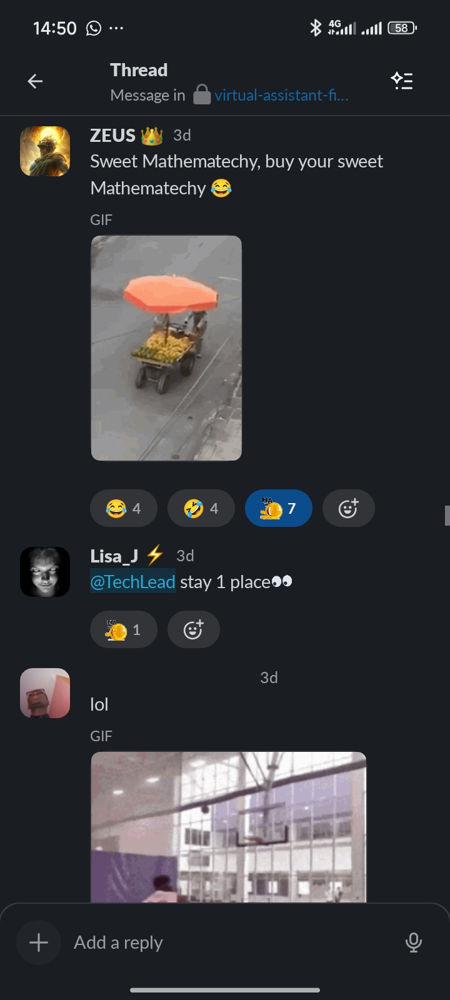
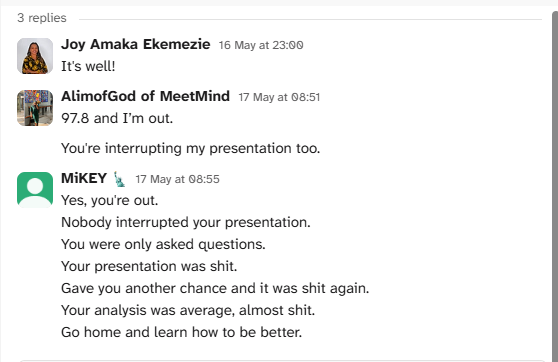
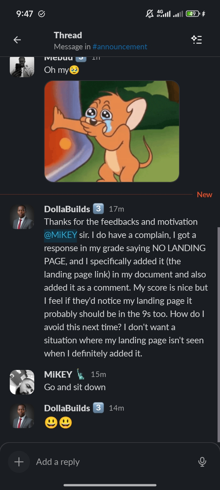

In the previous cohort, things were wild. Looking around the VA track, I noticed something instantly: we were the only two male figures present. I was the lone male intern, and he was the sole male mentor.
During those final days, he handed me the nickname Chindindu, and naturally, I started calling him Brother MiKEY. Fast forward to HNG i14, he spotted me out instantly and hinted at me returning. It was an elite callout, and nobody else caught on except for G_ (Godwin)!



MiKEY is a real hardworker. There's no question about it. For one of my tasks, we needed a voice call, but I could tell he was completely underwater with work. By the next task, we needed to sync even more, and he was so slammed we almost didn't get to have the call.
At one point, he casually mentioned how swamped he was and how much he urgently needed a personal Virtual Assistant. I was running around dealing with a million tech issues myself, so I couldn't step up to be his VA. (Consider this me running a free advertisement for him right now, lol).
I saw so much of myself in his routine that I literally asked him: "Is this how you started out?" Because I really don't want to turn into a permanently swamped busy bee. Like, honestly, where am I supposed to slot in my future Netherlands vacation time if I'm always grinding?



I was completely losing my mind under HNG deadline pressure for that task where we needed a call, but when we finally got on the line? He absolutely delivered. We connected so well about what I needed for the task and my gears started firing again. He even helped me get a 1 hour extension on the task.
A couple of weeks later, he mapped out a spectacular structural concept for my social checklist webpage and extended the timeline perfectly—giving me room to build without letting me slack off. Thanks to his direct SEO feedback one one of my tasks, I secured an 86% score! and I didn't even use up ALL of his advice.

Now, the man teases a lot, and it is hilarious. I still crack up remembering him calling a colleague "sweet Mathematechy! Buy your Sweet Mathematechy" out loud in the channel like he was hawking her on the street.
But he can also be incredibly snappy when provoked. He straight-up labeled someone's final work "shit" once, and during a live presentation, he got so visibly pissed off at people turning in unedited AI work. It's probably his one real flaw, but honestly, it happens so rarely I'll allow it. It keeps everyone sharp!



MiKEY will offer to pull you up, but he will never do your work for you. Only those who are quick enough to grab on would actually benefit.
Overall, he feels like a big brother who would absolutely save your life, but would never give you his power bank.
I've archived every single piece of feedback he dropped during HNG. The pressure I faced here meant I couldn't use them all instantly, but they're saved for everything I'm doing next. I truly hope he builds the dream he works so tirelessly for.
Huge thanks to Brother MiKEY for the guidance, corrections, and structure. I hope he has eaten dinner today!